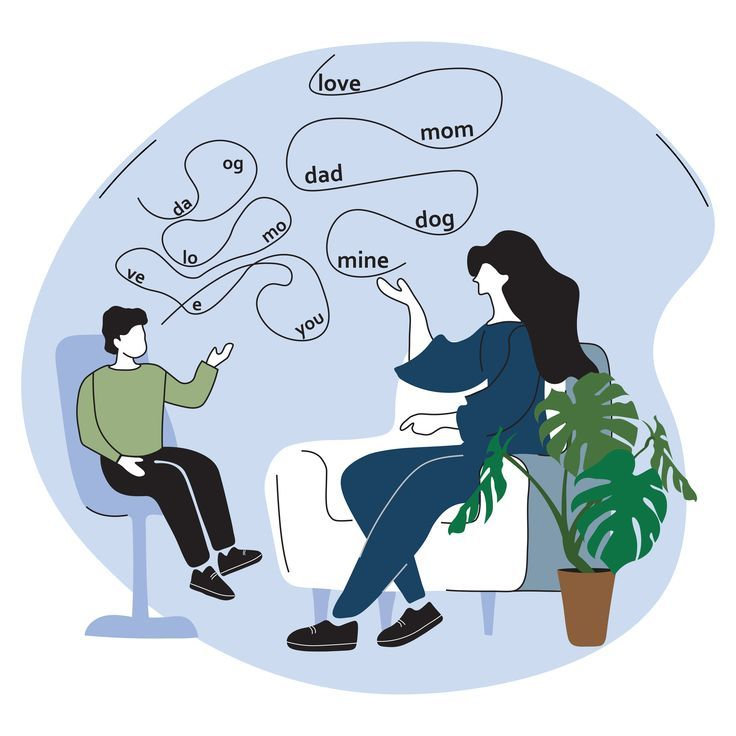
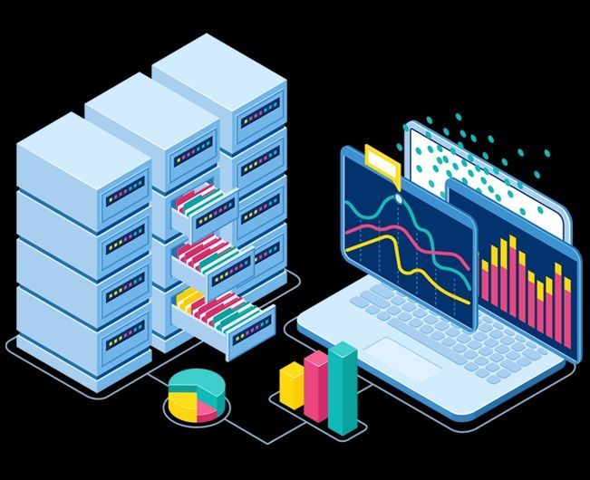

Tiana Longjam
Data Science & Mathematics
University of Wisconsin–Madison · Class of December 2026
Data Science & Mathematics
University of Wisconsin–Madison · Class of December 2026
I'm Tiana, a Data Science and Mathematics student at UW–Madison with a Business minor in Finance & Accounting. I work at the intersection of machine learning, mathematics, and real-world impact — from neural PDE solvers to full-stack AI applications.
I care about using data to reduce inequality — whether that's surfacing bias in lending, making speech therapy accessible, or improving mental health access.
Madison, WI


Neo4j
Python
Whisper
CNN
Twilio
RL
GCP
BigQuery
Dataform
GCS
SQL
Spark
Hive
PySpark MLlib
Gemini API

React
FastAPI
Flask
Gemini

Python
Exa AI API
HuggingFace

Python
Docker
HDFS
SQL
gRPC
PyArrow
gRPC
Docker
LRU Cache
Protobuf
Cassandra
gRPC
Spark
Docker

React
Vite
Express
Supabase
Google Maps API

Python
GeoPandas
SQLite
Scikit-learn

Python
OOP
BST
Matplotlib

Python
Pandas
NumPy
Visualization

Python
Pandas
Seaborn
Matplotlib
.jpeg)
Python
Scikit-learn
XGBoost
Matplotlib


Machine Learning
Probabilistic reasoning
NLP
Computer Vision
Groups
Rings
Homomorphisms
Abstract Vector Spaces
Capital Budgeting
Asset Valuation
Financial Markets
Options